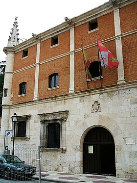

Menú
BURGOS
- Página principal
- Localización
- Localidades
- Geografía
- Historia
- Cultura
- Naturaleza
- Tradiciones
- Otros aspectos de interés
Localización
La provincia de Burgos se localiza en la parte norte de la península ibérica, en la región histórica de Castilla y desde 1983 integrada en la comunidad autónoma de Castilla y León. Limita por el norte con las comunidades autónomas de Cantabria y del País Vasco, donde la cordillera Cantábrica juega el papel de frontera natural entre la Meseta Norte y la costa cantábrica. Por el oeste limita las de Valladolid y Palencia; al este con el extremo superior de la cordillera Ibérica, que la separan de la comunidad autónoma de La Rioja y la provincia de Soria y al sur con la provincia de Segovia.
Si desea visualizar un mapa en el que se puede seleccionar cada una de las provincias de CyL, pinche en el siguiente enlace: Provincias de CyL
Localidades
Algunas de las localidades principales de la provincia de Burgos son:
- Miranda de Ebro: Es un municipio y ciudad de España, ubicado en el norte del país, perteneciente a la provincia de Burgos, en la comunidad autónoma de Castilla y León. Está situado en la comarca del Valle del Ebro, al noreste de la provincia, junto a los límites con Álava y La Rioja. Cuenta con una población de 35 760 habitantes (INE 2020), y es la segunda ciudad más poblada de la provincia tras la capital.
- Aranda de Duero: Es un municipio y ciudad española del sur de la provincia de Burgos, en Castilla y León. Pertenece al partido judicial de Aranda de Duero. Cuenta con una población de 32 856 habitantes (2019), siendo el tercer municipio no capital de provincia más poblado de la comunidad autónoma.
Históricamente es conocida por haberse celebrado en 1473 el Concilio de Aranda, con presencia de la todavía princesa Isabel I de Castilla. También por el plano de Aranda, realizado en 1503, siendo el mapa urbano más antiguo del país y el documento cartográfico más antiguo del Archivo General de Simancas, en el cual se basaron para el desarrollo de las ciudades del Nuevo Mundo recién descubierto por la Corona de Castilla. - Briviesca: Es un municipio y una ciudad española situada en el norte de la península ibérica, cabecera del partido judicial de Briviesca, capital de la comarca de La Bureba, provincia de Burgos, comunidad autónoma de Castilla y León. Según los datos demográficos de 2020, el municipio posee 6.582 habitantes, siendo el 4º más poblado de la provincia.
- Medina de Pomar: Es el municipio más poblado de la comarca de Las Merindades, situada en el norte de la provincia de Burgos, comunidad autónoma de Castilla y León, España. Su entorno está caracterizado por los paisajes ribereños de los ríos Nela y Trueba o Salón, los escarpes de la sierra de la Tesla, los pinares de Losa, y los llanos dedicados al cultivo de cereal, patata y lechuga.
Geografía
La provincia de Burgos está situada en el sector nordeste de la Meseta Septentrional y se extiende desde la cordillera Cantábrica y sistema Ibérico hasta el curso del Duero, de modo que la mayor parte de su territorio es una elevada y desigual meseta, que se extiende por el valle del Duero y la cabecera del Ebro, con una altitud media entre los 700 y los 900 m sobre el nivel del mar, sin contar las altas montañas. Debido a la barrera que supone la cordillera Cantábrica el clima tiende a ser frío y poco húmedo.
Historia
Esta provincia es la llamada Cabeza de Castilla porque fue donde se fundó el Reino de Castilla. Su capital, dispone de un importante patrimonio histórico-artístico entre el que se encuentra su catedral. Aparte de Burgos, existen dos núcleos industriales importantes: el de Aranda de Duero y el de Miranda de Ebro, este último, el segundo más importante de la provincia después de la capital.
Tras el reciente descubrimiento e investigación de los Cartularios de Valpuesta, de discutidísima autenticidad, la provincia de Burgos entra en lid con la Comunidad Autónoma de La Rioja por ser considerada como la Cuna del Castellano. El estatuto de autonomía de Castilla y León los menciona en su articulado como uno de los textos con las huellas más primitivas de la lengua castellana.
La provincia de Burgos, en el sentído político actual del término, nace como todas ellas en la división provincial de 1833 de Javier de Burgos, existiendo otras estructuras con sede en esta ciudad.
Cultura
Estas son algunas de las actividades culturales que se pueden realizar en la provincia de Burgos:
Museos
Museo de BurgosAntiguamente conocido como Museo Arqueológico Provincial, tiene sus dependencias en dos palacios contiguos del siglo xvi, la Casa de Miranda y la Casa de Íñigo Angulo, formando una manzana entre las calles Calera y Miranda.
Las colecciones del Museo tienen una procedencia exclusivamente burgalesa, por origen o destino, y muestran la evolución histórica y cultural de la provincia.

Fuente: Wikipedia
Museo de la Evolución Humana
El Museo de la Evolución Humana está llamado a ser el museo más importante sobre la evolución humana en el mundo. En él se exponen los hallazgos del yacimiento de la Sierra de Atapuerca.
Fue inaugurado el día 13 de julio de 2010 por la reina Sofía. El entorno incluye el CENIEH, Centro Nacional de Investigación sobre la Evolución Humana, ya en funcionamiento, además del futuro Auditorio y Palacio de Congresos de Burgos que será inaugurado el primer trimestre de 2011.

Fuente: Wikipedia
Eventos culturales
Festival de EbrovisiónEs un festival de música independiente que se celebra en Miranda de Ebro desde el año 2001 congregando a más de 10 000 asistentes. Algunas de las bandas que han participado en este evento son Fangoria, Ocean Colour Scene, Vetusta Morla, Sidonie, The Raveonettes, Los Planetas, Mando Diao, entre otras. Es organizado por la Asociación Cultural Rafael Izquierdo de Miranda de Ebro. La revista Mondosonoro lo catalogó en 2010 como el tercer mejor festival de España.
Festival Sonorama
Es un festival de música muy relevante que se celebra en la localidad burgalesa de Aranda de Duero desde 1998. Considerado como el festival más importante del interior, el número de visitantes ha ido creciendo conforme lo hacía su historia y reputación. Está organizado por la asociación cultural, y sin ánimo de lucro, Art de Troya, a mediados de agosto de cada año. Destacar la superación de las previsiones de 2010 donde pasaron por Sonorama más de 30.000 personas.
Naturaleza
- Pozo Azul: Es un manantial o surgencia de agua ubicado en la localidad burgalesa de Covanera (España), al sur de la Cordillera Cantábrica. Presenta grandes caudales en época lluviosa.

Fuente: Wikipedia - Cañón de Rio Lobos: El Parque Natural del Cañón del Río Lobos es un espacio natural protegido de la comunidad autónoma de Castilla y León, España. Aproximadamente un tercio de su superficie se ubica en la provincia de Burgos y dos tercios en la de Soria.
El río Lobos es el eje del cañón del mismo nombre y causante de la erosión que le ha dado forma, discurre principalmente por la provincia de Soria, aunque nace en la de Burgos. Se sitúa en la separación de la Cordillera Ibérica con la alta meseta del Duero. La longitud del cañón es de 25Km comenzando cerca del municipio burgalés de Navas del Pinar y con acceso desde Hontoria del Pinar y finaliza cerca del municipio soriano de Ucero. Los accesos se realizan por los municipios de sus extremos y por la parte central por el lugar llamado Puente de los Siete Ojos.

Fuente: Wikipedia - Ojo Guareña: El Monumento Natural de Ojo Guareña constituye un complejo kárstico de importancia internacional, localizado en el municipio de Merindad de Sotoscueva, al norte de la provincia de Burgos, comarca de Merindades, España.
Contiene un complejo kárstico con más de 110 km. de galerías subterráneas con estrechas relaciones hidrogeológicas y fauna cavernícola. Se han localizado 143 especies acuáticas en el complejo kárstico de las cuales 27 se consideran nuevas citas.

Fuente: Wikipedia
Tradiciones
- Fiestas
- El Colacho: Se celebra el domingo del Corpus en Castrillo de Murcia. Es una fiesta de la Iglesia católica destinada a celebrar la Eucaristía. Su principal finalidad es proclamar y aumentar la fe de la Iglesia en Jesucristo presente en el Santísimo Sacramento.
Fuente: Youtube/Vipavi_ - Fiestas Patronales de Aranda de Duero: Conocidas como fiestas de la Virgen de las Viñas. Con 9 días de duración, se suceden alrededor de la segunda semana de septiembre, iniciándose con el llamado Cañonazo. El día de la Virgen de las Viñas es el domingo siguiente al 8 de septiembre (Natividad de Nuestra Señora).
- El Colacho: Se celebra el domingo del Corpus en Castrillo de Murcia. Es una fiesta de la Iglesia católica destinada a celebrar la Eucaristía. Su principal finalidad es proclamar y aumentar la fe de la Iglesia en Jesucristo presente en el Santísimo Sacramento.
- Tradiciones
- Romería de Las Nieves: Se celebra el 5 de agosto y es la romería más importante de la zona norte de Burgos. Se celebra en la localidad de Las Machorras, en el municipio de Espinosa de los Monteros. En ella tienen lugar unas danzas típicas de un posible origen prerromano, además de lo que se denomina como "Echar el verso" en el que los propios danzantes y "el Bobo" cuentan, con una entonación particular, las noticias acaecidas en el pueblo durante el año. Acude mucha gente de las provincias de Burgos, Cantabria, Vizcaya, Zaragoza y Madrid.
Fuente: Youtube/Tv San Leonardo - Romería de San Bernabé: En la Merindad de Sotoscueva, junto a la histórica Villa de Espinosa de los Monteros, se celebra el sábado más próximo al 11 de junio una romería tradicional con la concurrencia de mucha gente de las provincias cercanas. Tiene lugar en el entorno de la Cueva de San Bernabe (Ojo Guareña)
Fuente: Youtube/
- Romería de Las Nieves: Se celebra el 5 de agosto y es la romería más importante de la zona norte de Burgos. Se celebra en la localidad de Las Machorras, en el municipio de Espinosa de los Monteros. En ella tienen lugar unas danzas típicas de un posible origen prerromano, además de lo que se denomina como "Echar el verso" en el que los propios danzantes y "el Bobo" cuentan, con una entonación particular, las noticias acaecidas en el pueblo durante el año. Acude mucha gente de las provincias de Burgos, Cantabria, Vizcaya, Zaragoza y Madrid.
Otros aspectos de interés
- Gastronomía La gastronomía de la provincia burgalesa es muy variada debido a su gran extensión territorial. El norte de la provincia, la zona más montañosa, está influenciada por la cocina pasiega y cántabra, mientras que al este, la gastronomía riojana se funde con la burgalesa.
- Olla podrida: Es el nombre popular de un guiso original de la cocina castellana presente ya en la gastronomía de la Edad Media, y encuadrado dentro de la familia de los cocidos. Toma su nombre del recipiente en el que tradicionalmente se cocina, y es un plato fuerte, adecuado por tanto para el invierno.
Tiene entre sus principales ingredientes la alubia (judía) roja, cocinada en olla de barro durante varias horas (de ahí su nombre) hasta que quedaban blandas. A la olla se le añaden los siguientes ingredientes cárnicos fuertes: morcilla de arroz, chorizo, adobados, curados y ahumados (costilla, panceta, oreja y morro del cerdo o pezuñas). También en ocasiones se añade la bola o relleno (similar al cocido), realizado con huevo

Fuente: Wikipedia - Morcilla de Burgos: Un embutido sin carne, relleno principalmente con cebolla, sangre, manteca y arroz, a la que se añaden otros condimentos como el pimentón. En algunas zonas del norte de la provincia, realizan una variedad de morcilla más delgada que la tradicional que se llama delgadilla

Fuente: Wikipedia
- Música Tradicional
- Canteria. Oficio tradicional de los Canteros en Las Merindades de Burgos
Fuente: Ivoox.com
- Actuación Grupo Tradicional GAVILLA:
Fuente: Youtube/BurgosOnlineTV
- Tiempo